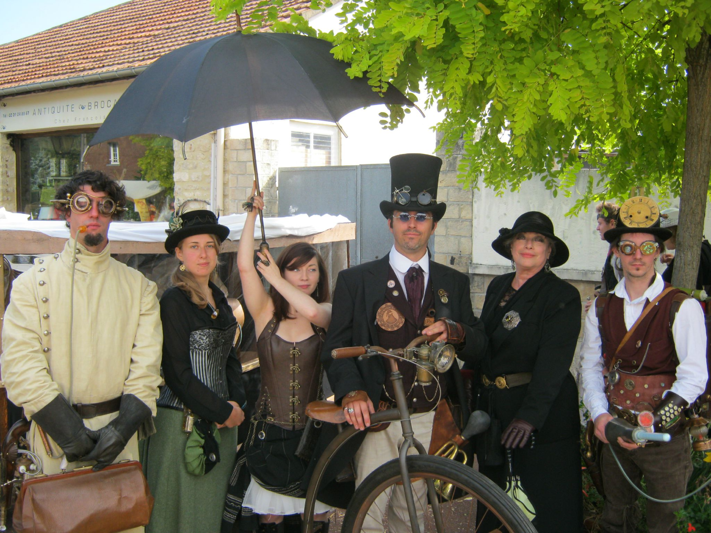
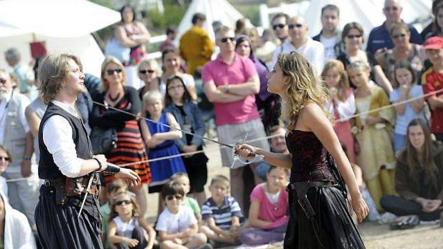
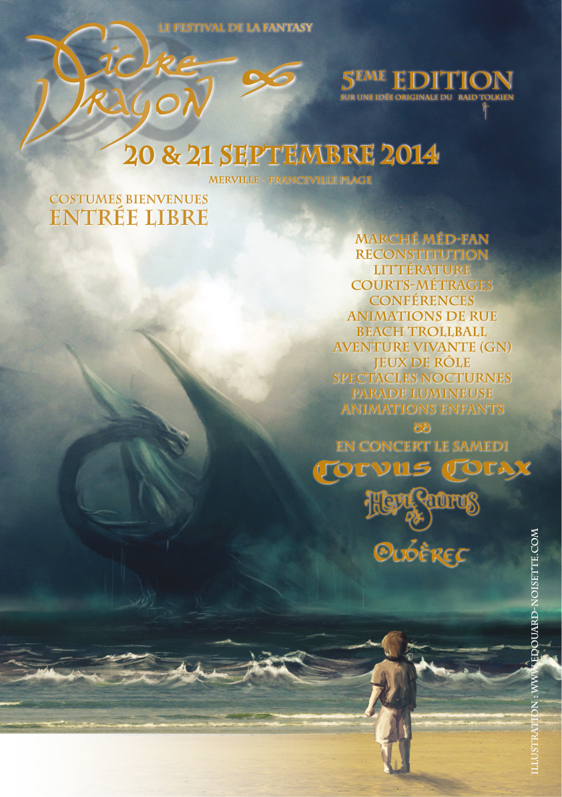

Normandie - Une terre de culture
Normandie - Une terre de cultureLa Fantasy
La Fantasy, est à la base un genre littéraire né au XIXème siècle, qui s’inscrit dans les littératures de l’imaginaire, au même titre, par exemple, que le merveilleux, le fantastique ou la science-fiction. Elle s’étend maintenant à tous les grands domaines de l’Art. Le mot « fantasy » vient du grec et signifie « imagination ». Les récits de Fantasy prennent leurs sources dans l’histoire, les mythes et les contes. Les intriguent se déroulent généralement dans un monde parallèle ou un lointain passé oublié. La Fantasy fait intervenir le surnaturel, la magie, et des créatures imaginaires. L’un des piliers de ce genre est sans aucun doute John Ronald Reuel Tolkien (qui a donné son nom à l’association : Le Raid Tolkien), avec, entre autre, « Le Hobbit » et « Le Seigneur des Anneaux ». Les peuples Un élément fondamental de la Fantasy est la présence de nombreux peuples non humains, tels les elfes, les nains, les hobbits, mais aussi farfadets, korrigans, lutins, gnomes et autres. Ces peuples diffèrent physiquement des humains, et ont leurs propres coutumes et caractères. La magie S’il y a bien un élément indispensable dans la Fantasy celui-ci ! La magie est toujours présente, parfois peu, comme dans « le seigneur des anneaux », parfois omniprésente, comme dans « Harry Potter », elle peut aussi être ancienne et oubliée, et peut autant être utilisé par ceux qui luttent pour le Bien, par ceux qui soutiennent le Mal, ou par les deux camps. La magie peut également exister sous forme de cadeau offert aux fidèles d’une divinité de l’univers en question. Les monstres Là où il y a des héros, il faut des antagonistes, et dans les mondes de la Fantasy, ils ne sont pas toujours humains. Les monstres sont les plus souvent opposés à l’humanité et ses alliés, mais il arrive qu’ils ne cherchent qu’à vivre tranquillement et doivent se défendre contre une humanité agressive. Certains monstres ne le sont également que du point de vue qui leur est porté par l’auteur, comme les gobelins, petites créatures agressives dans « Le Seigneur des Anneaux » et banquiers compétents dans « Harry Potter ».

Le Steampunk
Les Uchronies L’univers Steampunk est une uchronie, c’est-à-dire un univers qui aurait suivi la même histoire que la nôtre, mais où une différence notable en a changé le cours, faisant différer les deux univers, parfois de manière extrême. Il existe ainsi des Univers uchroniques de certains auteurs où la seconde guerre mondiale a été perdue par les alliés, ou bien où l’empire romain ne s’est jamais effondré et domine l’Europe. Une série télévisée, « Sliders », s’était spécialisé dans ce domaine, et les héros se déplaçaient dans des uchronies différentes à chaque épisode. L’univers Steampunk Ce qui différencie l’univers Steampunk du nôtre est l’inexistence du pétrole. Ainsi, comme son nom l’indique c’est la vapeur qui est devenue la reine des énergies, souvent développée bien au-delà de nos propres connaissances (Steam = vapeur). Beaucoup d’univers Steampunk incluent l’électricité, mais pas tous. Le courant Steampunk fait donc la part belle aux gigantesques structures métalliques, au cuir et aux tissus naturels, toutes les matières plastiques étant inexistantes. Les rouages et système mécaniques complexes y sont très souvent présents, étant en quelque sorte les symboles de cet univers. Le précurseur de ce mouvement est Jules Vernes, car à son époque où la vapeur était la seule énergie valable, il a extrapolé le futur à partir de la technologie de la vapeur qu’il voyait autour de lui. Il a créé ainsi un univers riche et cohérent, où certaines de nos propres technologies sont égalées, comme les véhicules spatiaux (« De la terre à la lune ») ou des sous-marins (« 20 000 lieues sous les mers »). De nos jours, ceux qui suivent le mouvement Steampunk doivent penser à l’envers pour imaginer la conception de certains objets sans les dérivés du pétroles qui la composent. Il existe néanmoins deux « courants » Steampunk, l’un basé sur l’époque victorienne, plus inspiré par l’œuvre de Monsieur Vernes, l’autre plus basé sur le Far West (« Les mystères de l’ouest » ou « Wild wild West » en sont de bons exemples). Le second modèle existe surtout aux USA. Une mouvance marginale du Steampunk est le steam-med, où les inventions vapeur coïncident avec l’époque médiévale.
L'univers du festival
Le Grand Dragon S’il y a une figure emblématique du festival, c’est bien Le Grand Dragon : Père des mondes de la fantasy, il est intervenu bien souvent au cours de l’histoire de Merravilla pour réconcilier les courants, ou calmer une situation… Il a même été tué et rendu à la vie lors de la quatrième édition. Il est intimement lié à la magie et à l’univers du festival. (Cf : « les scénarios des éditions ») Les Dragons Les neuf enfants du Grand Dragon sont sortis de leur coquille lors de la quatrième édition du festival. Ils sillonnent à présent les mondes de la fantasy, apportant leur magie à leurs fidèles. La couleur violette Cette couleur qui n’est ni lié aux Venguins, ni au Brasiards, ni aux Brumeux, a été arborée à plusieurs reprises par des entités ayant pour but de détruire les mondes de la fantasy. Cette couleur est donc réputée maudite, et la porter attire souvent le malheur et le mauvais œil sur soi…
Les courants
Le festival Cidre et Dragon possède aujourd’hui un univers à la croisée de plusieurs thèmes : la fantasy et le Steampunk. En plus de ses thèmes, cet univers porte aussi plusieurs courants de pensée : les courants Brasiard, Venguin, et Brumeux. Ces courants correspondent à une vision philosophique de la vie. Les relations entre courants Comme on peut l’imaginer, les relations entre les courants ne sont pas toujours roses… Si beaucoup réussissent à vivre en bonne entente, certains ne peuvent pas supporter la présence des autres courants. Les radicaux de tous les courants pensent être les seuls à même de comprendre les pensées du Grand Dragon. Les guerres de courants sont d’ailleurs souvent de leur fait, comme la dernière en date où Brasiards et Venguins voulaient garder la magie renaissante pour leur courant seul, et les Brumeux radicaux voulant tout simplement l’empêcher de renaître pour que seule la technologie règne Heureusement, ils sont loin de composer la majorité de leur courant, et nombreux sont les modérés, cohabitant plus ou moins sereinement avec les autres courants, voir les teintés, qui s’ils se sentent d’un courant et en arborent les couleurs, n’ont aucune sorte de préjugés sur les autres courants. Il existe même certains personnes qui ne se sentent d’aucun courant et n’arborent donc aucune des couleurs des courants. Ainsi, un groupe de guerriers de différents courants ayant combattu ensemble contre une horde de monstres pourront se sentir plus lié à leur propre groupe qu’à leur courant respectif. De même, un Venguin modéré dont le but est de réussir à vaincre un géant des glaces ne sera peut-être pas contre une prothèse mécanique démultipliant la puissance de ses coups de hache… sans pour autant se sentir brumeux ! Les Gris: Ce nom rassemble les personnes ne souhaitant pas appartenir aux courants existant. Soit parce qu'ils sont de caractère anarchiste, soit parce qu'ils ne veulent pas que leur courant interviennent dans leur profession : par exemple, Sir Oliver, le bourgmestre de Merravilla.
